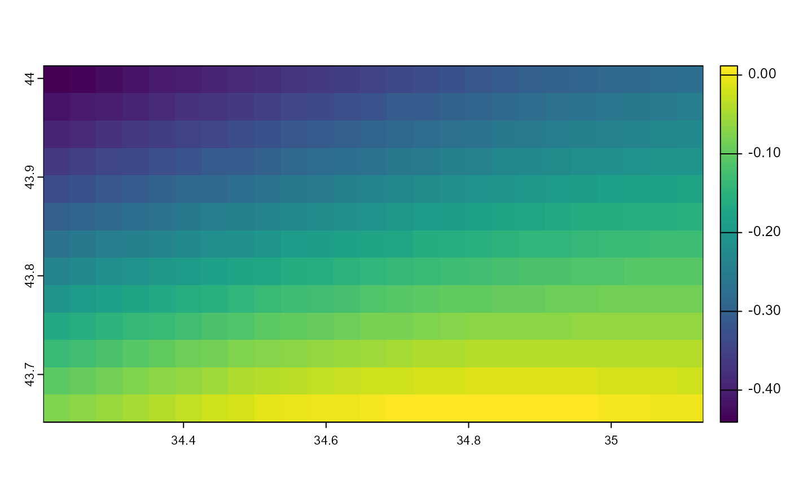

Example component u
get_component_u.RdExample horizontal direction raster.
Details
Example of input component_u used for functions. It is a cropped area
of yearly aggregated and normalized horizontal component at Black Sea.
References
Lima, L., Aydogdu, A., Escudier, R., Masina, S., Ciliberti, S. A., Azevedo, D., Peneva, E. L., Causio, S., Cipollone, A., Clementi, E., Cretí, S., Stefanizzi, L., Lecci, R., Palermo, F., Coppini, G., Pinardi, N., and Palazov, A. (2020). Black Sea Physical Reanalysis (CMEMS BS-Currents) (Version 1) [Data set]. Copernicus Monitoring Environment Marine Service (CMEMS). doi:10.25423/CMCC/BLKSEA_MULTIYEAR_PHY_007_004 . Last Access: 07/11/2024.
Schulzweida, U. (2023). CDO User Guide (23.0). Zenodo. doi:10.5281/zenodo.10020800 .
Examples
component_u <- get_component_u()
terra::plot(component_u)
